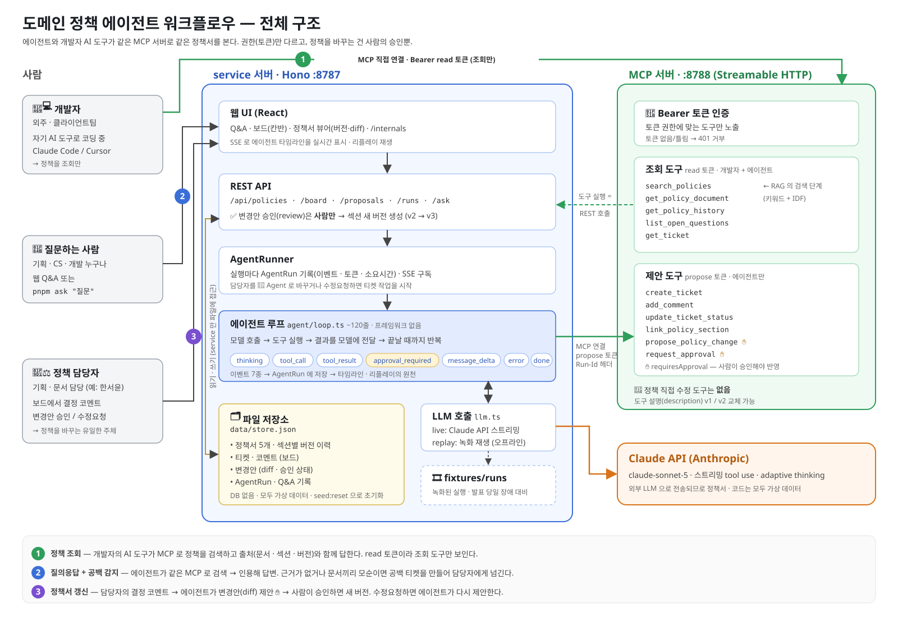
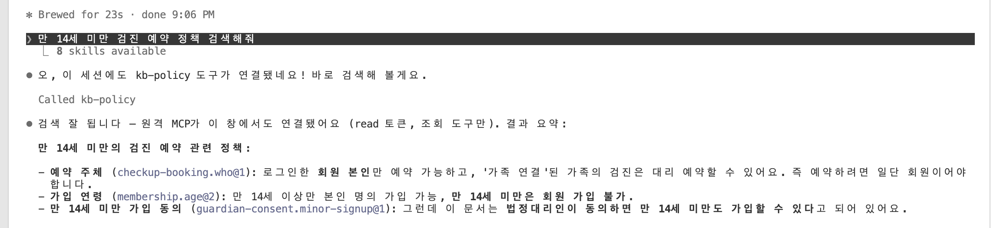

불완전한 기획서와 그 기획서로 만든 프로덕트를 운영할 때 있으면 좋겠다 싶은 에이전트
리빌딩 성공을 기원하며...
구멍난 기획서가 산출물의 전부..! 내재화 이후 기획자가 개발자에게 로직 확인 요청
초반엔 시스템 오류 시 해결이 우선, 기획서 업데이트 누락 (수정할 정책에 대한 내용 부재)
운영하는 사람도 정책을 몰라서 개발자에게 직접 문의
빠르고 정확한 정책 결정 필요
도메인을 처음 접하는 개발자
문서 정리는 뒤로 밀리기 쉬움
이 문제를 해결하기 위해 에이전트를 만든다면?
| 기능 | 내용 |
|---|---|
| 정책 질의응답 | 질문하면 정책서를 찾아서 답하고, 근거가 된 문서·섹션·버전을 같이 보여 줌 |
| 공백 감지 | 근거가 없거나 문서끼리 내용이 다르면, 추측해서 답하지 않고 담당자에게 티켓 생성 |
| 정책서 갱신 | 티켓에 담당자가 결정을 남기면 에이전트가 변경안을 만들고, 담당자가 승인해야 반영 |
| MCP 서버 | 외주 개발자가 쓰는 Claude Code, Cursor에서도 같은 정책을 조회할 수 있게 공개 |

| 누가 | 하는 일 | 권한 |
|---|---|---|
| 개발자 | 개발하면서 자기 AI 도구로 정책 조회 | read 토큰, 조회만 가능 |
| 에이전트 | 공백·모순 발견 시 티켓 생성, 결정 내용으로 변경안 작성 | propose 토큰, 정책 직접 수정 불가 |
| 정책 담당자 | 결정을 남기고, 변경안 승인 또는 수정요청 | 웹 화면, 승인은 사람만 가능 |
개발자는 물어보기만 하고, 정책이 비어 있으면 그 질문이 담당자에게 가는 티켓이 됩니다.

RAG · Agent Loop · MCP · HITL
답하기 전에 관련 문서를 찾아서 모델한테 같이 넘기는 방식.
고려할 것: 문서를 어떤 단위로 쪼갤지. 너무 크면 엉뚱한 게 섞이고, 너무 작으면 맥락이 끊김.
모델한테 묻고 → 도구 달라면 실행해서 결과 주고 → 다시 묻기. 도구 요청이 없을 때까지 반복.
고려할 것: 언제 멈출지. 최대 턴 수를 정해두고, 넘으면 사람한테 넘김.
AI 툴이 외부 도구·데이터에 붙는 표준 규약. 서버 하나 만들면 어떤 AI 클라이언트든 같은 도구를 씀.
고려할 것: 도구 설명. 모델은 이름이랑 설명만 보고 고르니까, 언제 쓰고 언제 쓰지 말지까지 적음.
중요한 결정은 에이전트가 안 하고 사람이 하도록 중간에 끼워 넣는 것.
고려할 것: 어디에 사람을 둘지. 되돌리기 어렵거나 책임이 필요한 일만 사람, 나머진 에이전트.